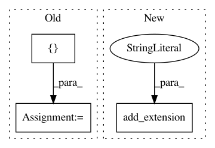

bf1944729ac465ffa7581733bc63ed86a2dfbeb1,scipy/sparse/linalg/isolve/setup.py,,configuration,#Any#Any#,14
Before Change
]
if needs_g77_abi_wrapper(lapack_opt):
methods += [join("FWRAPPERS", "wrap_veclib_f.f"),
join("FWRAPPERS", "wrap_veclib_c.c")]
else:
methods += [join("FWRAPPERS", "wrap_dummy.f")]
Util = ["STOPTEST2.f.src","getbreak.f.src"]
After Change
sources = [join("iterative", x) for x in sources]
sources += get_g77_abi_wrappers(lapack_opt)
config.add_extension("_iterative",
sources=sources,
extra_info=lapack_opt)
config.add_data_dir("tests")
return config
In pattern: SUPERPATTERN
Frequency: 3
Non-data size: 3
Instances
Project Name: scipy/scipy
Commit Name: bf1944729ac465ffa7581733bc63ed86a2dfbeb1
Time: 2013-09-14
Author: pav@iki.fi
File Name: scipy/sparse/linalg/isolve/setup.py
Class Name:
Method Name: configuration
Project Name: pymc-devs/pymc3
Commit Name: cc7b90f7864496035318623f611c3725d544dc60
Time: 2007-04-18
Author: anand.prabhakar.patil@15d7aa0b-6f1a-0410-991a-d59f85d14984
File Name: setup.py
Class Name:
Method Name:
Project Name: scipy/scipy
Commit Name: 551c0158dc482066ef9a566a4a6cdb58796b39ce
Time: 2006-11-07
Author: robert.kern@gmail.com
File Name: Lib/sandbox/odr/setup.py
Class Name:
Method Name: configuration